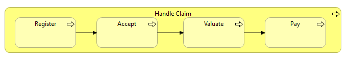
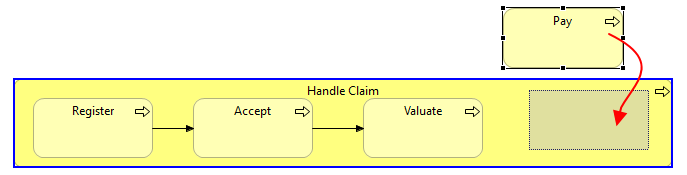

每个图形元素（注释和连接点除外）都可以充当其他元素的容器元素。将一个元素拖放到另一个元素中意味着它成为父元素的子元素。这对于表示包含类型关系（例如组合、聚合和关联）或方便分组很有用。
在以下屏幕截图中，元素“注册 Register”、“接受 Accept”、“评估 Valuate”和“支付 Pay”是父“处理索赔流程 Handle Claim Process”元素的子元素：
父元素包含的子元素
在将元素拖入或覆盖其他元素时，会提供视觉提示以指示被拖动的元素将被移动到父（容器）元素中。当元素被拖动到目标元素上时，这是一个蓝色突出显示：
被拖入容器元素的子元素。以蓝色突出显示的容器
ArchiMate 规范 声明某些关系也可以通过嵌套模型元素来表达。也就是说，父子元素之间不需要绘制显式连接，而是可以表示为元素的容器嵌套。
Archi 通过自动关系管理 (ARM) 支持此约定。该系统确保在合格的父/子元素之间自动创建和隐藏关系。系统可以根据用户的需要进行配置。请参阅首选项来配置 ARM。
解释自动关系管理系统 (ARM) 的最佳方式是举例。
假设用户有一个名为“处理索赔流程”的业务流程元素，它将充当四个子流程“注册”、“接受”、“评估”和“支付”的容器元素（“父”） .父流程和子流程之间的关系通常表示为四种组合关系。这些可以使用以下连接线常规绘制：
父子流程的组成关系
但是，这在视觉上并不像子进程被放置在容器父流程内那样清晰。
我们可以通过在Preferences中启用ARM系统来解决这个问题。这确保了当子流程被放置在父元素中时，连接隐藏在视图中，但仍然存在于实际语义模型中。将子元素拖入和拖出父元素会隐藏并显示显式关系。隐藏的连接是“隐式”连接。
连接现在从视图中隐藏
从调色板向视图中的父元素添加新元素或从模型树拖放会导致对话框询问是否应在父元素和子元素之间创建新关系：
对话框创建新的嵌套关系
请注意，对话框将仅显示父元素和子元素之间的有效关系，并且仅显示在 首选项 中指定的关系。也可以选择子元素和父元素之间的有效关系。这些显示为“（反向）”。
如果您不想创建新关系，请选择“无”。
如果多个元素被移动（拖放操作）到视图中的父元素或从模型树拖放到父元素上，并且父子之间不存在现有的首选关系元素，然后显示一个对话框，提供在父元素和子元素之间创建新关系。您可以为每个子元素选择不同类型的关系：
用于创建多个关系的对话框
如果您不想为元素创建新关系，请从下拉组合框中选择“（无）”。要在下拉组合框中选择相同类型的关系，请按住 Ctrl / Command 键并选择。